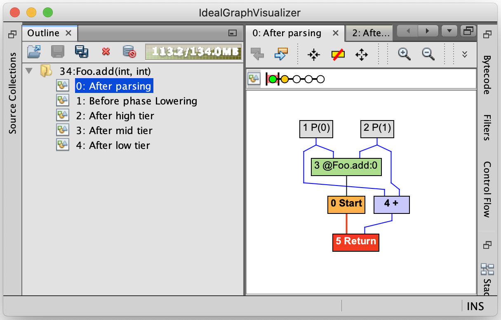
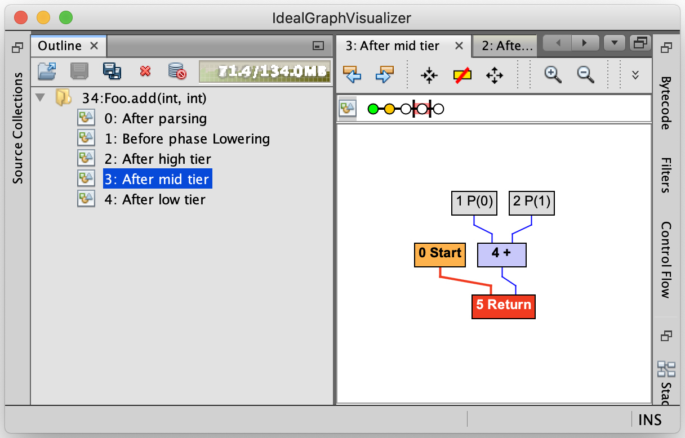
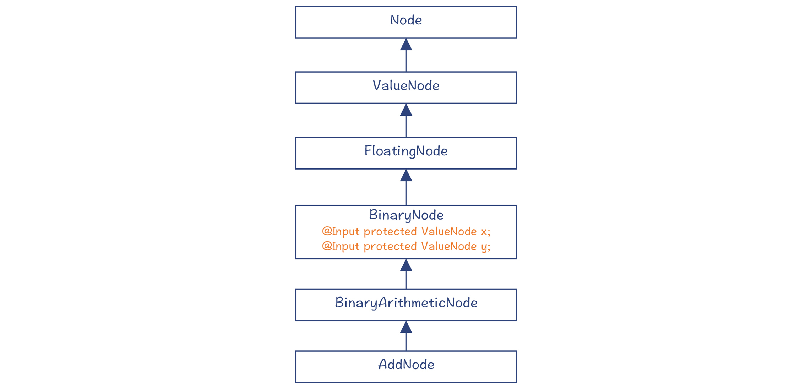
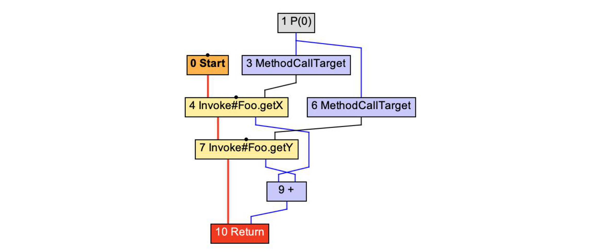
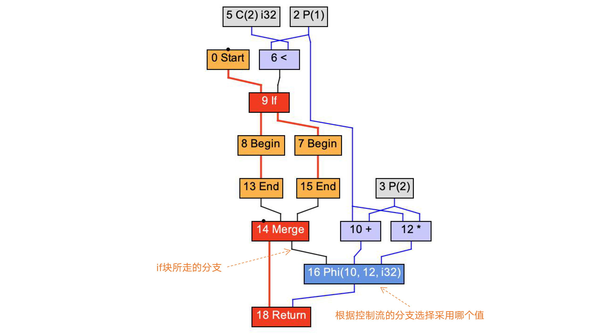
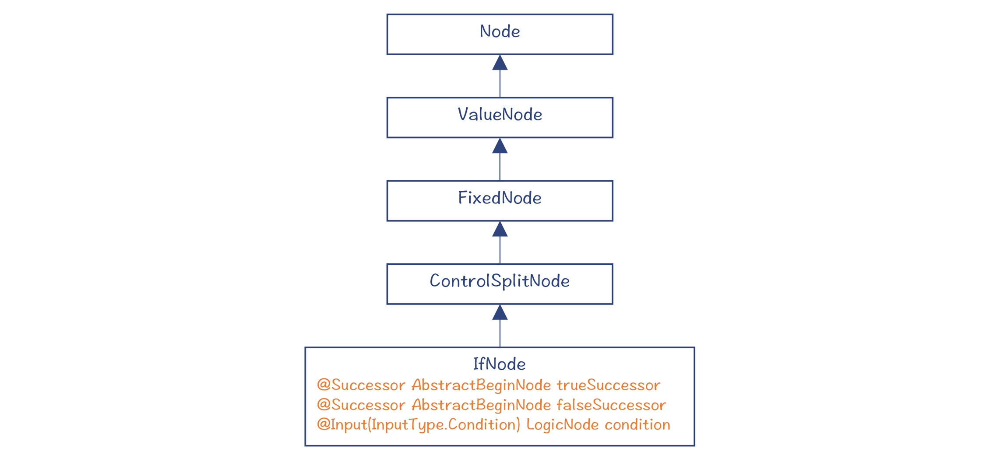
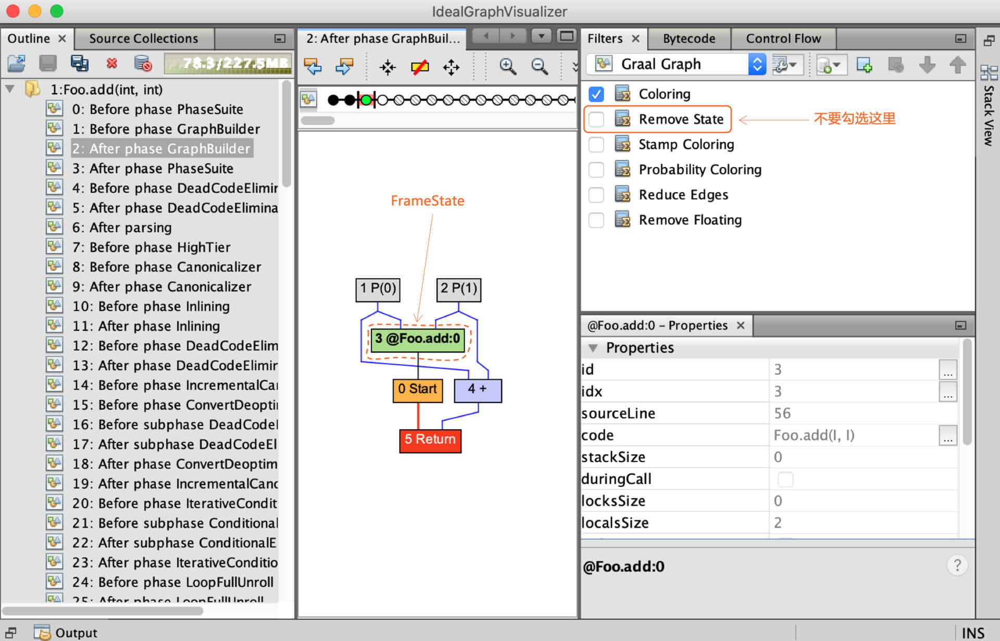
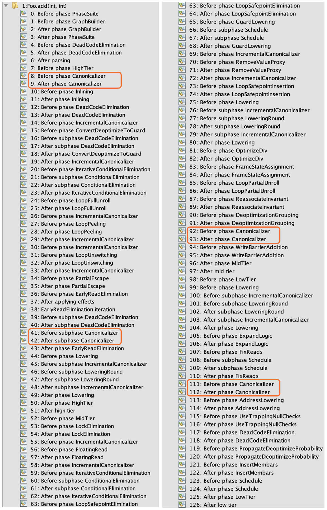
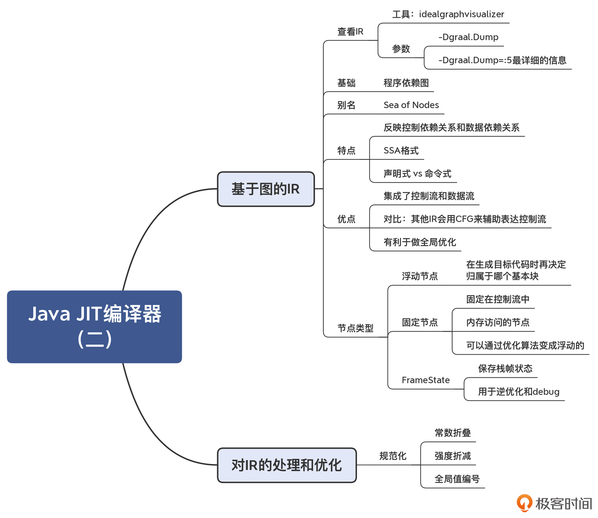

- 00 学习指南 如何学习这门编译原理实战课？.md.html
- 00 开篇词 在真实世界的编译器中游历.md.html
- 01 编译的全过程都悄悄做了哪些事情？.md.html
- 02 词法分析：用两种方式构造有限自动机.md.html
- 03 语法分析：两个基本功和两种算法思路.md.html
- 04 语义分析：让程序符合语义规则.md.html
- 05 运行时机制：程序如何运行，你有发言权.md.html
- 06 中间代码：不是只有一副面孔.md.html
- 07 代码优化：跟编译器做朋友，让你的代码飞起来.md.html
- 08 代码生成：如何实现机器相关的优化？.md.html
- 09 Java编译器（一）：手写的编译器有什么优势？.md.html
- 10 Java编译器（二）：语法分析之后，还要做些什么？.md.html
- 11 Java编译器（三）：属性分析和数据流分析.md.html
- 12 Java编译器（四）：去除语法糖和生成字节码.md.html
- 13 Java JIT编译器（一）：动手修改Graal编译器.md.html
- 14 Java JIT编译器（二）：Sea of Nodes为何如此强大？.md.html
- 15 Java JIT编译器（三）：探究内联和逃逸分析的算法原理.md.html
- 16 Java JIT编译器（四）：Graal的后端是如何工作的？.md.html
- 17 Python编译器（一）：如何用工具生成编译器？.md.html
- 18 Python编译器（二）：从AST到字节码.md.html
- 19 Python编译器（三）：运行时机制.md.html
- 20 JavaScript编译器（一）：V8的解析和编译过程.md.html
- 21 JavaScript编译器（二）：V8的解释器和优化编译器.md.html
- 22 Julia编译器（一）：如何让动态语言性能很高？.md.html
- 23 Julia编译器（二）：如何利用LLVM的优化和后端功能？.md.html
- 24 Go语言编译器：把它当作教科书吧.md.html
- 25 MySQL编译器（一）：解析一条SQL语句的执行过程.md.html
- 26 MySQL编译器（二）：编译技术如何帮你提升数据库性能？.md.html
- 27 课前导读：学习现代语言设计的正确姿势.md.html
- 28 前端总结：语言设计也有人机工程学.md.html
- 29 中端总结：不遗余力地进行代码优化.md.html
- 30 后端总结：充分发挥硬件的能力.md.html
- 31 运行时（一）：从0到语言级的虚拟化.md.html
- 32 运行时（二）：垃圾收集与语言的特性有关吗？.md.html
- 33 并发中的编译技术（一）：如何从语言层面支持线程？.md.html
- 34 并发中的编译技术（二）：如何从语言层面支持协程？.md.html
- 35 并发中的编译技术（三）：Erlang语言厉害在哪里？.md.html
- 36 高级特性（一）：揭秘元编程的实现机制.md.html
- 37 高级特性（二）：揭秘泛型编程的实现机制.md.html
- 38 综合实现（一）：如何实现面向对象编程？.md.html
- 39 综合实现（二）：如何实现函数式编程？.md.html
- 40 成果检验：方舟编译器的优势在哪里？.md.html
- 不定期加餐1 远程办公，需要你我具备什么样的素质？.md.html
- 不定期加餐2 学习技术的过程，其实是训练心理素质的过程.md.html
- 不定期加餐3 这几年，打动我的两本好书.md.html
- 不定期加餐4 从身边的牛人身上，我学到的一些优秀品质.md.html
- 不定期加餐5 借助实例，探究C++编译器的内部机制.md.html
- 划重点 7种编译器的核心概念与算法.md.html
- 期末答疑与总结 再次审视学习编译原理的作用.md.html
- 热点问题答疑 如何吃透7种真实的编译器？.md.html
- 用户故事 易昊：程序员不止有Bug和加班，还有诗和远方.md.html
- 知识地图 一起来复习编译技术核心概念与算法.md.html
- 结束语 实战是唯一标准！.md.html
- 捐赠
14 Java JIT编译器（二）：Sea of Nodes为何如此强大？
你好，我是宫文学。这一讲，我们继续来研究Graal编译器，重点来了解一下它的IR的设计。
在上一讲中，我们发现Graal在执行过程中，创建了一个图的数据结构，这个数据结构就是Graal的IR。之后的很多处理和优化算法，都是基于这个IR的。可以说，这个IR是Graal编译器的核心特性之一。
那么，为什么这个IR采用的是图结构？它有什么特点和优点？编译器的优化算法又是如何基于这个IR来运行的呢？
今天，我就带你一起来攻破以上这些问题。在揭晓问题答案的过程中，你对真实编译器中IR的设计和优化处理过程，也就能获得直观的认识了。
基于图的IR
IR对于编译器非常重要，因为它填补了高级语言和机器语言在语义上的巨大差别。比如说，你在高级语言中是使用一个数组，而翻译成最高效的x86机器码，是用间接寻址的方式，去访问一块连续的内存。所以IR的设计必须有利于实现这种转换，并且还要有利于运行优化算法，使得生成的代码更加高效。
在上一讲中，通过跟踪Graal编译器的执行过程，我们会发现它在一开始，就把字节码翻译成了一种新的IR，这个IR是用图的结构来表示的。那这个图长什么样子呢？非常幸运的是，我们可以用工具来直观地看到它的结构。
你可以从Oracle的网站上，下载一个idealgraphvisualizer的工具。下载之后，解压缩，并运行它：
export PATH="/<上级目录>/idealgraphvisualizer/bin:$PATH"
idealgraphvisualizer &
这时，程序会启动一个图形界面，并在4445端口上等待GraalVM发送数据过来。
接着，还是运行Foo示例程序，不过这次你要增加一个参数“-Dgraal.Dump”，这会让GraalVM输出编译过程的一些中间结果。并且在这个示例程序当中，我还增加了一个“-Xcomp”参数，它能让JIT编译器在第一次使用某个方法的时候，就去做编译工作。
mx vm \
-XX:+UnlockExperimentalVMOptions \
-XX:+EnableJVMCI \
-XX:+UseJVMCICompiler \
-XX:-TieredCompilation \
-XX:CompileOnly=Foo \
-Dgraal.Dump \
-Xcomp \
Foo
GraalVM会在终端输出“Connected to the IGV on 127.0.0.1:4445”，这表明它连接上了idealgraphvisualizer。接着，在即时编译之后，idealgraphvisualizer就接收到了编译过程中生成的图，你可以点击显示它。
这里我展示了其中两个阶段的图，一个是刚解析完字节码之后（After parsing），一个是在处理完中间层之后（After mid tier）。

图1：After parsing

图2：After mid tier
Graal IR其实受到了“程序依赖图”的影响。我们在第6讲中提到过程序依赖图（PDG），它是用图来表示程序中的数据依赖和控制依赖。并且你也知道了，这种IR还有一个别名，叫做节点之海（Sea of Nodes）。因为当程序稍微复杂一点以后，图里的节点就会变得非常多，我们用肉眼很难看得清。
基于Sea of Nodes的IR呢，算是后起之秀。在HotSpot的编译器中，就采用了这种IR，而且现在Java的Graal编译器和JavaScript的V8编译器中的IR的设计，都是基于了Sea of Nodes结构，所以我们必须重视它。
这也不禁让我们感到好奇了：Sea of Nodes到底强在哪里？
我们都知道，数据结构的设计对于算法来说至关重要。IR的数据结构，会影响到算法的编写方式。好的IR的设计，会让优化算法的编写和维护都更加容易。
而Sea of Nodes最大的优点，就是能够用一个数据结构同时反映控制流和数据流，并且尽量减少它们之间的互相依赖。
怎么理解这个优点呢？在传统的编译器里，控制流和数据流是分开的。控制流是用控制流图（Control-flow Graph，CFG）来表示的，比如GNU的编译器、LLVM，都是基于控制流图的。而IR本身，则侧重于表达数据流。
以LLVM为例，它采用了SSA格式的IR，这种IR可以很好地体现值的定义和使用关系，从而很好地刻画了数据流。
而问题在于，采用这种比较传统的方式，控制流和数据流会耦合得比较紧，因为IR指令必须归属于某个基本块。
举个例子来说明一下吧。在下面的示例程序中，“int b = a*2;”这个语句，会被放到循环体的基本块中。
int foo(int a){
int sum = 0;
for(int i = 0; i< 10; i++){
int b = a*2; //这一句可以提到外面
sum += b;
}
}
可是，从数据流的角度看，变量b只依赖于a。所以这个语句没必要放在循环体内，而是可以提到外面。在传统的编译器中，这一步是要分析出循环无关的变量，然后再把这条语句提出去。而如果采用Sea of Nodes的数据结构，变量b一开始根本没有归属到特定的基本块，所以也就没有必要专门去做代码的移动了。
另外，我们之前讲本地优化和全局优化的时候，也提到过，它们的区别就是，在整个函数范围内，优化的范围是在基本块内还是会跨基本块。而Sea of Nodes没有过于受到基本块的束缚，因此也就更容易做全局优化了。
好，那在概要地理解了Graal IR的数据结构之后，接下来，我们就具体了解一下Graal IR，包括认识一下数据流与控制流的特点，了解两种不同的节点：浮动节点和固定节点，以及认识一种特殊的节点：FrameState。
数据流和控制流
我们已经知道，Graal IR整合了两种图结构：数据流图和控制流图。
首先，我们来看看它的数据流。
在下图中，蓝色的边代表的是数据流，也就是数据之间的依赖关系。参数1（“P(0)”节点）和参数2（“P(1)”节点）的值流入到+号节点，再流入到Return节点。
图3：Foo.add()的数据流
在Graal IR的设计中，Add节点有两个输入，分别是x和y，这两个输入是AddNode的两个属性。注意，这个图中的箭头方向代表的是数据依赖关系，也就是Add节点保持着对它的两个输入节点的引用，这其实跟AST是一致的。而数据流向，则是反过来的，从x和y流向Add节点。
图4：Add节点的数据依赖关系
查看AddNode的设计，你会发现其父类中有两个成员变量，x和y。它们用@input做了注解，这就意味着，这两个成员变量代表的是数据流图中的两条边。

图5：Add节点及其各级父节点
另外，Graal IR的数据流图是符合SSA格式的。也就是说，每个节点代表了SSA中的一个值，它只被定义一次，也就相当于SSA中的每个变量只被赋值一次。
我们再来看看控制流。
下图中，红色的边代表的是控制流，控制流图代表的是程序执行方向的改变。进入或退出一个函数、条件分支语句、循环语句等，都会导致程序的执行从一个地方跳到另一个地方。
图6：Foo.add()的控制流
数据流加上控制流，就能完整表达程序的含义，它等价于字节码，也等价于更早期的AST。你可以从Start节点，沿着控制流遍历这个图。当到达Return节点之前，Return所依赖的数据（x+y）也需要计算出来。
add()方法的控制流很简单，只有Start和Return两个节点。我们做一个稍微复杂一点的例子，在Foo.add2()示例程序中，调用两个函数getX()和getY()，分别获取x和y成员变量。
public int add2(){
return getX() + getY();
}
对应的Graal图如下。它增加了两个节点，分别是调用方法getX和getY，这就导致了控制流发生变化。

图7：Foo.add2()对应的IR
注意：对于这个例子，在使用GraalVM时，要使用-XX:-Inline选项，避免编译器做内联优化，否则Foo.getX()和Foo.getY()会被内联。我们在下一讲中就会探讨内联优化。
除了调用其他函数，if语句、循环语句等，也会导致控制流的变化。我们看看这个例子：
public int doif(int x, int y){
int z;
if (x < 2)
z=x+y;
else
z=x*y;
return z;
}
它对应的Graal图如下，if语句会让控制流产生分支，分别对应if块和else块，最后在Merge节点合并起来。

图8：doif()方法对应的IR
IfNode作为一种控制流节点，它保存着对下级节点的引用，并用@Successor注解来标注。这意味着trueSuccessor和falseSuccessor两个成员变量，代表着控制流中的两条边。当然，你也会注意到，If节点有一个数据流的输入，这就是If的判断条件。IR会基于这个判断条件，来决定控制流的走向。

图9：IfNode及其各级父节点
跟控制流类似，数据流也产生了两个分支，分别是x+y和x*y。最后用一个Phi节点合并到一起。
Phi节点是SSA的一个特性。在doif示例程序中，z可能有两个取值。如果控制流走的是if块，那么z=x+y；而如果走的是else块，则z=x*y。Phi节点就起到这个作用，它根据控制流来选择值。
总结一下：控制流图表达的是控制的流转，而数据流图代表的是数据之间的依赖关系。二者双剑合璧，代表了源程序完整的语义。
接下来，我再给你介绍一下浮动节点和固定节点的概念。
浮动节点和固定节点
注意，在Graal IR，数据流与控制流是相对独立的。你看看前面的doif示例程序，会发现x+y和x*y的计算，与if语句的控制流没有直接关系。所以，你其实可以把这两个语句挪到if语句外面去执行，也不影响程序运行的结果（要引入两个临时变量z1和z2，分别代表z的两个取值）。
对于这些在执行时间上具有灵活性的节点，我们说它们是浮动的（Floating）。你在AddNode的继承层次中，可以看到一个父类：FloatingNode，这说明这个节点是浮动的。它可以在最后生成机器码（或LIR）的环节，再去确定到底归属哪个基本块。
除了浮动节点以外，还有一些节点是固定在控制流中的，前后顺序不能乱，这些节点叫做固定节点。除了那些流程控制类的节点（如IfNode）以外，还有一些节点是固定节点，比如内存访问的节点。当你访问一个对象的属性时，就需要访问内存。
内存是个共享资源，同一个内存地址（比如对象的属性），可以被多次读写。也就是说，内存位置不是SSA中的值，所以也不受单赋值的约束。
对同一个内存地址的读写操作，顺序是不能乱的。比如下面代码中，第二行和第三行的顺序是不能变的，它们被固定在了控制流中。
x := 10
store x to 地址a
y := load 地址a
z := y + 10
不过，在运行某些优化算法的时候，某些固定节点会被转化成浮动节点，从而提供了更大的代码优化空间。我们在下一讲的“内联和逃逸分析”中，会见到这样的例子。
FrameState节点
在看Graal IR的时候，你经常会遇到一个绿色的节点插在图中。为避免你产生困惑，接下来我就专门给你解释一下这个节点，我们一起来认识一下它。
在Foo.add()新生成的IR中，如果你不勾选“Remove State”选项，就会显示出一个绿色的节点。这个节点就是FrameState节点。

图10：Foo.add()中的FrameState节点
FrameState比较特殊。它保存了栈帧的状态，而且这里我指的是Java字节码解释器的栈帧的状态，包括了本地变量和操作数栈里的值。
为什么要保存栈帧的状态呢？
第一个用途，是用于逆优化。上一讲我们说过，编译器有时候会基于推测做一些激进的优化，比如忽略掉某些分支。但如果推测依据的前提错了，那么就要做逆优化，重新回到解释器去执行。而FrameState的作用就是在代码中一些叫做安全点的地方，记录下栈帧的状态，便于逆优化以后，在解释器里去接着执行程序。
第二个用途，是用于debug。编译器会用FrameState，来记录程序执行的一些中间状态值，以方便程序的调试。
对于Foo.add()方法的IR，通过后面的一些优化处理，你会发现Foo.add()并不需要逆优化，那么FrameState节点就会被去掉。否则，FrameState就会转化成一个逆优化节点，生成与逆优化有关的代码。
如果你并不关心逆优化，那你在平常看IR的过程中，可以勾选“Remove State”选项，不用关注FrameState节点就行了。
好了，我们已经大致了解了Graal IR。进一步，编译器要基于IR做各种处理和优化。
对Graal IR的处理和优化
通过上一讲，我们已经知道在编译过程中要对图进行很多遍的处理。还是以Foo.add()示例程序为例，在运行GraalVM的时候，我们加上“-Dgraal.Dump=:5”选项，程序就会详细地dump出所做的处理步骤，你可以在idealgraphvisualizer中看到这些处理环节，点击每个环节可以看到相对应的IR图。

图11：对Foo.add()所做的处理
在这些处理阶段的名称中，你会看到我们在第7讲中提到的一些代码优化算法的名称（如死代码删除）。有了前面课程的铺垫，你现在看它们应该就消除了一些陌生感。
另外，你会发现，在这些处理阶段中，有一个Canonicalizer的阶段出现了好几次，并且你可能对这个词也比较陌生，所以下面我们不妨来看看，这个阶段都做了些什么。
规范化（Canonicalizer）
Canonicalize的意思是规范化。如果某段程序有多种写法，那么编译器会处理成一种统一的、标准的写法。
比如，对于下面这个简单的函数，它是把a乘以2。在CanonicalizerPhase运行之后，乘法运算被替换成了移位运算，也就是a<<1。它的效果与乘以2是相同的，但运行效率更高。
public int doDouble(int a){
return 2*a;
}
图12：未做规范化优化之前，是乘法运算
图13：做完规范化优化之后，变成移位运算
你还可以试一下对某个变量取两次负号的操作。在规范化阶段以后，两个负号就会被去掉，直接返回a。
public int negneg(int a){
return -(-a);
}
规范化需要的操作，都是对本节点进行修改和替换，一般都不太复杂。某节点如果实现了Canonicalizable接口，在CanonicalizerPhase就会对它做规范化。
在规范化阶段实现的优化算法包括：常数折叠（Constant Folding）、强度折减（Strength reduction）、全局值编号（Global Value Numbering，GVN），等等。它们的原理，我在第7讲都介绍过，这里就不赘述了。
课程小结
这一讲，我给你介绍了Graal的IR：它整合了控制流图与数据流图，符合SSA格式，有利于优化算法的编写和维护。
我还带你了解了对IR的一个优化处理过程：规范化。规范化所需要的操作一般并不复杂，它都是对本节点进行修改和替换。在下一讲中，我会带你分析另外两个重要的算法，内联和逃逸分析。
另外，Graal的IR格式是声明式的（Declarative），它通过描述一个节点及其之间的关系来反映源代码的语义。而我们之前见到的类似三地址代码那样的格式，是命令式的（Imperative），它的风格是通过命令直接告诉计算机，来做一个个的动作。
声明式和命令式是编程的两种风格，在Graal编译器里，我们可以看到声明式的IR会更加简洁，对概念的表达也更加清晰。我们在后面介绍MySQL编译器的实现机制当中，在讲DSL的时候，还会再回到这两个概念，到时你还会有更加深刻的认识。
本讲的思维导图我也放在了这里，供你参考：

一课一思
了解了Graal IR的特点以后，通过对比我们在第7讲中学过的优化算法，你觉得哪些优化算法在Graal IR上实现起来会更方便？为什么？欢迎在留言区分享你的看法。
如果你觉得有收获，也欢迎你把今天的内容分享给更多的朋友。
参考资料
基于图的IR，有三篇论文必须提到：
- 程序依赖图：J. Ferrante, K. J. Ottenstein, and J. D. Warren. The program dependence graph and its use in optimization. July 1987。有关程序依赖图的概念在1987年就提出来了。
- Click的论文：A Simple Graph-Based Intermediate Representation。这篇文章比较易读，属于必读文献。Click还发表了一些论文，讲述了基于图的IR上的优化算法。
- 介绍Graal IR的论文：Graal IR: An Extensible Declarative Intermediate Representation。这篇论文也很易读，建议你一定要读一下。
© 2019 - 2023 Liangliang Lee. Powered by gin and hexo-theme-book.